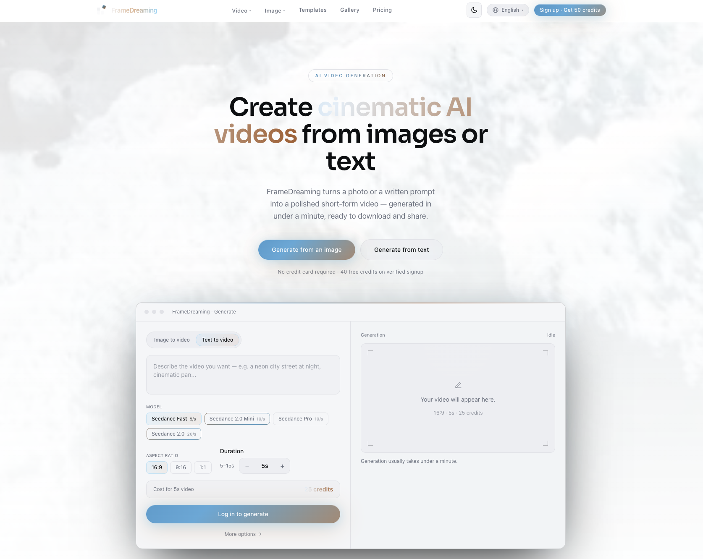
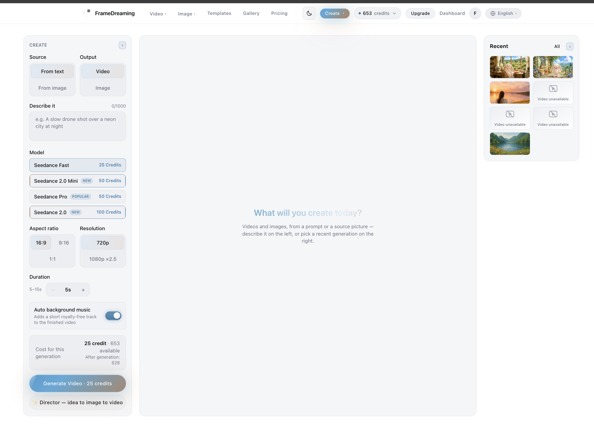
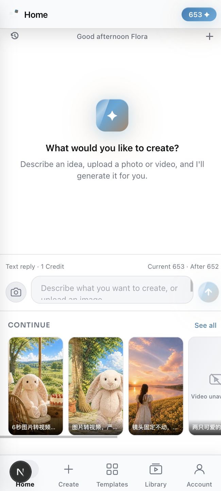
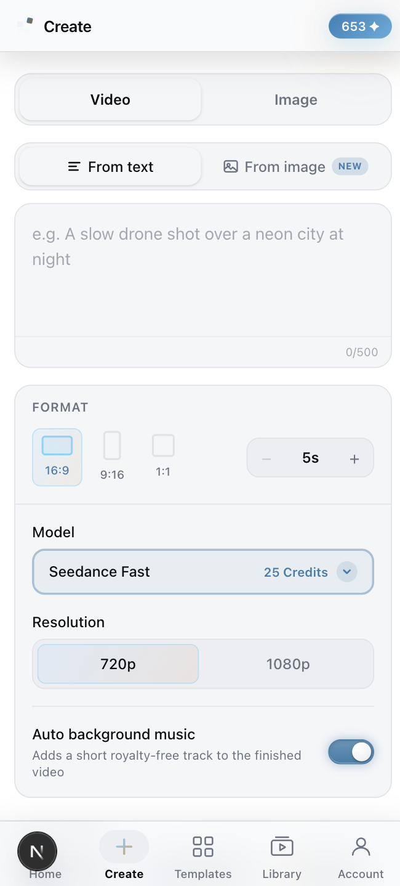
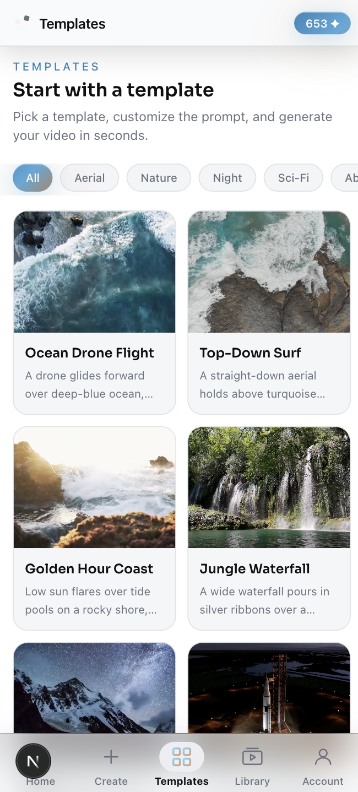

Flexible source and output
Users can begin from text or an image, then generate video or image output without leaving the central workplace.
Product Case Study · Creative AI · 2026
A five-language Web and iOS creative AI product I designed and built for generating video and imagery from text, source images and guided templates.
Web product experience


iOS product experience



Generated with FrameDreaming
Product intent
FrameDreaming explores how an image-to-video workflow can be presented with enough guidance for experimentation without hiding the creative choices behind a single opaque action.
The Web and iOS interfaces support five languages: English, Español, 日本語, 简体中文 and 繁體中文, making the same creation workflow accessible without changing its structure or controls.
The product is still in development, so this case study focuses on the product direction, interaction model and real outputs generated through the current workflow.
Creative workflow
Begin from text, a source image or a reusable template.
Set format, duration, model, resolution and optional music.
Use credits to turn the direction into a moving variation.
Return to recent creations, review results and iterate.
Product decisions
Users can begin from text or an image, then generate video or image output without leaving the central workplace.
Model, aspect ratio, duration, resolution, background music, credit cost and balance remain understandable before generation.
The preview canvas and recent-generation panel support comparison, reuse and continued iteration alongside Templates, Gallery and Library.
Related exploration
The broader practice also includes experiments in AI-generated 3D form. This interactive Sketchfab model is presented transparently as an AI exploration rather than hand-modelled work.
Reflection
Because FrameDreaming is not yet publicly launched, the strongest proof is the work it already produces. Showing real generated videos makes the product idea concrete while keeping the status honest.
The next phase is to refine generation feedback, iteration history and output management before presenting a public live link.
Back to the beginning
PTEscore→